Exam Like Questions: Module 3
Lecture 5 and 6
T/F
1) In electrostatic equilibrium all electric charges on a metal conductor are stationary and spread uniformly throughout the conductor.
Answer: False
All charges reside on the surface.
2) Gauss’s law only applies if a charge distribution with symmetry can be constructed.
Answer: False
Gauss’s Law always applies but might be difficult or less useful for problems with less symmetry.
3) If the net charge inside a spherical Gaussian surface is zero then the electric field everywhere on this surface is zero.
Answer: False
Gauss’s Law finds electric field using . Charges on the gaussian surface, by definition, are not enclosed. Charge collects in this way on a metal conductor in electrostatic equilibrium. If you want the electric field at this location (using Gauss’s Law) we need to rely on limits. Take the surface at r+Δr where r is the distance from the center to the surface of interest. Δr is some arbitrarily small number. Now the charges at the surface are enclosed. Then take the limit as Δr→0
Multiple Choice
1) What is the electric field strength just outside a conducting sphere carrying a surface charge density of 1.4 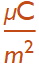 : a) 0.158 x N/C, b) 0.158 x N/C, c) 0 N/C, or d) 0.158 x N/C
Answer: B
Gauss’ Law: 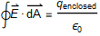
Equilibrium so E is constant and 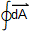= 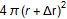→4π
Also, =σ A → σ (4π r)
Remember
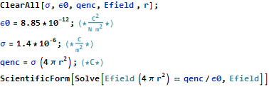
2) The inward pointing electric field 20 cm from the center of a 2 cm diameter copper sphere is 7.0 N/C. How many electrons are on the surface of the sphere: a) 1.94 x , b) 1.94 x , c) 1, or d) 9.72 x
Answer: A
Gauss’ Law:
Equilibrium so E is constant and = 4π(r+Δr)→4π r
Remember
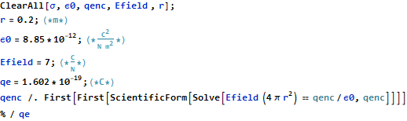
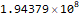
Useful Exercises
1) An 8 cm diameter sphere carries a net charge of 16 μC and the electric field measured is 166N/C. (a) How far from the sphere was the measurement made? (b) What is the surface charge density assuming the sphere is a conductor.
Answer: a) 29.4 m b)
Gauss’ Law:
Equilibrium so E is constant and = 4π(r+Δr)→4π r
Remember
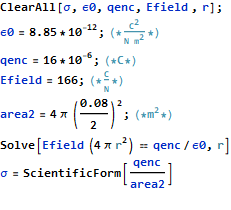

2) A 3 m by 3 m square metal plate has a net charge of 31.6 μC and the electric field is measured to be 88 N/C above the center of the plate. (a) How far from the plate was the measurement made? (b) At what height above the plate does this electric field based on an infinite sheet approximation equal that assuming the charge can be viewed as a point charge?
Answer: a) 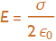 is constant b) 56.8 m
Gauss’ Law:
ASSUMPTION: 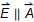
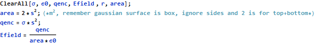
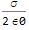
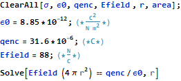
3) A 20 m long straight copper wire has a 36.7 N/C electric field strength 10 cm from the wire. (a) How much charge is on this 20 m long wire? (b) What is the linear charge density on this wire?
Answer: a) 4.08149*10^^-9 C b) 2.04075*10^^-10
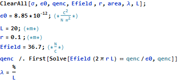
Lecture 7
T/F
1) The electron volt is a measure of energy.
Answer: True
Often they are easier to work with because they are much smaller than Joules. BUT eV is NOT SI!!
2) The electric field vector is always perpendicular to a line of constant electric potential.
Answer: True
Equipotentials.
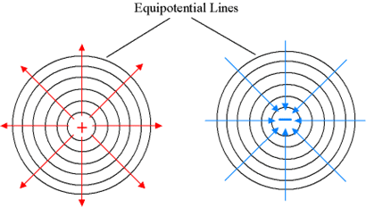
Multiple Choice
1) Points A and B have electrical potentials of 6 V and 17 V respectively. How much energy will a proton gain in moving between these two points; a) 23 eV, b) 11 eV, c) -11 eV, or d) 0 eV.
Answer: B
ΔV=Final-Initial→B-A=17 V
Energy gained ⧦ q ΔV where 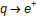
2) An electron starts at rest at a field point whose potential is 81 V and gains energy as it accelerates to a point at 227 V. How fast is the electron moving when it reaches the second point; a) 51.3 x m/s, b) 8.93 x  m/s, c) 7.16 x m/s, or d) 5.33 x m/s.
m/s, c) 7.16 x m/s, or d) 5.33 x m/s.
Answer: C
ΔV=Final-Initial→B-A
Energy gained ⧦ q ΔV where
Conservation of Energy 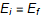
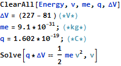
Useful Exercises
1) Find the potential as a function of position in the electric field :
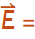a x where a is a constant and the potential is zero at x = 0.
Answer: 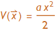
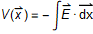
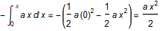
2) A charge Q(positive) lies at the origin and a second charge, 3Q(negative) lies on the x axis at distance a. Find two points on the x axis where the voltage is zero.
Answer: 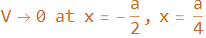
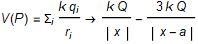
because we are only concerned with x direction.
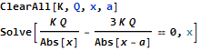
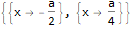
Or solve 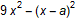=0